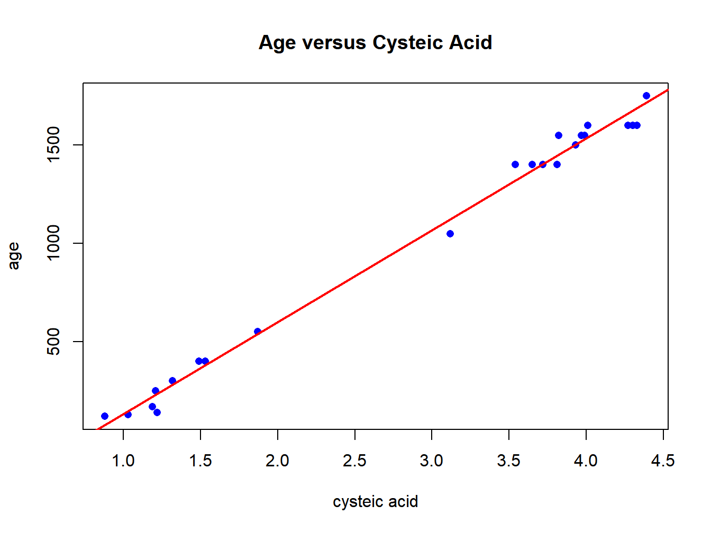
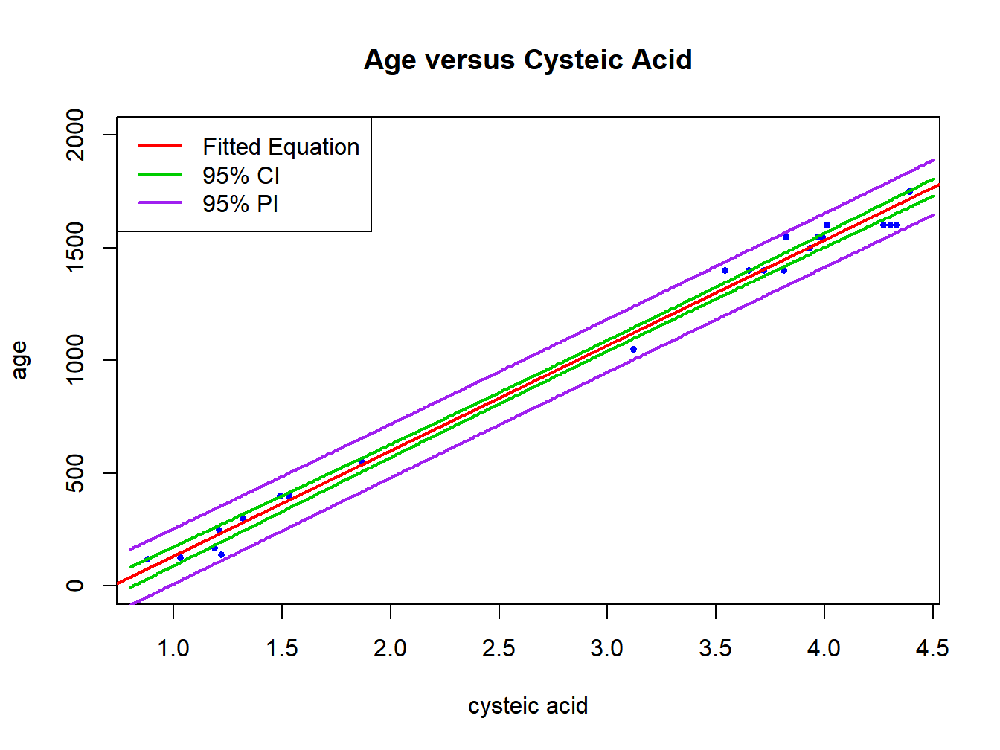
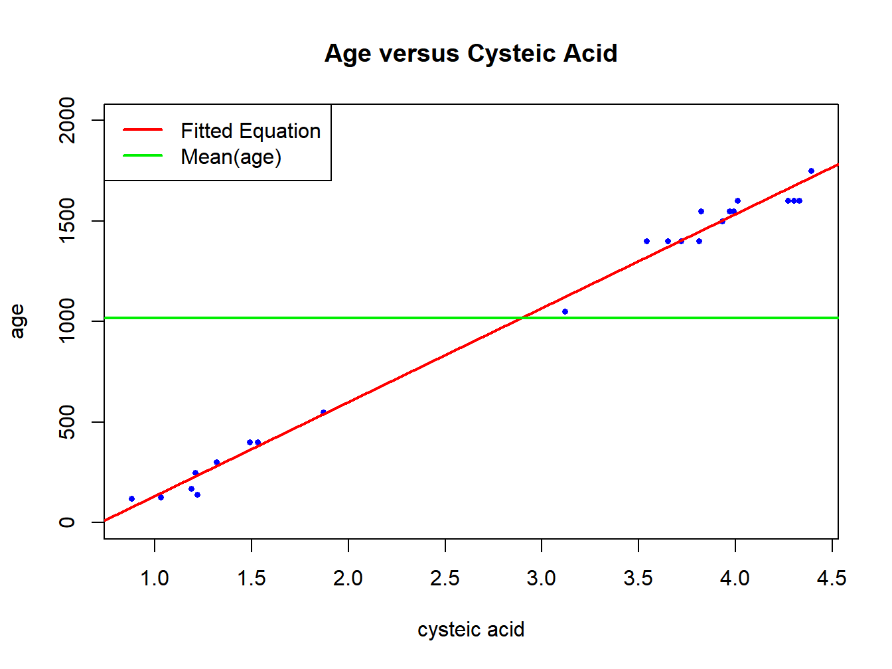
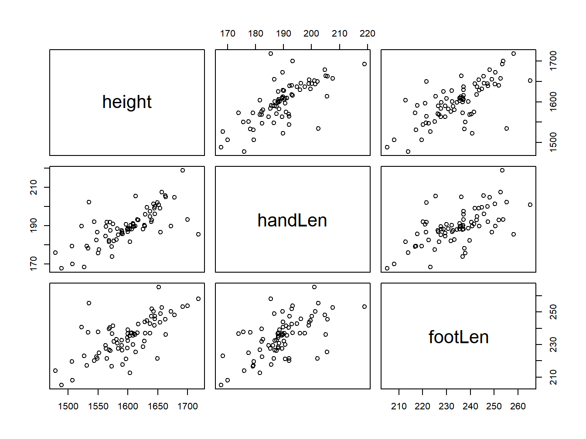
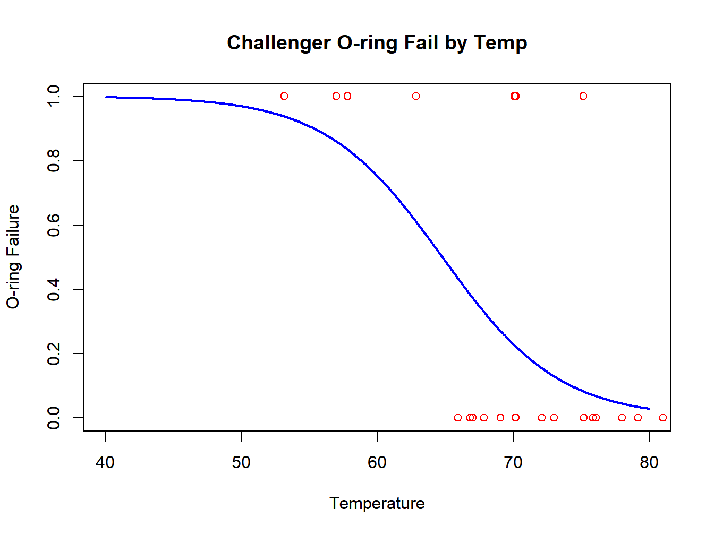

Chapter 9 Regression Models
Linear regression is used when there is a numeric response variable and numeric (and possibly categorical) predictor (explanatory) variable(s). The mean of the response variable is to be related to the predictor(s) with random error terms typically assumed to be independent and normally distributed with constant variance. The fitting of linear regression models is very flexible, allowing for fitting curvature, categorical predictors, and interactions between factors.
Logistic Regression is used when the outcome is binary, and there are one or more numeric (or possibly categorical) predictor variable(s). These models are used to determine whether the probability that the outcome of interest is associated with the predictor variable(s).
9.1 Simple Linear Regression
When there is a single numeric predictor, the model is referred to as Simple Regression. The response variable is denoted as \(Y\) and the predictor variable is denoted as \(X\). The model is written as follows.
\[ Y = \beta_0 + \beta_1 X + \epsilon \qquad \qquad \epsilon \sim N(0,\sigma) \mbox{ independent } \]
Here \(\beta_0\) is the intercept (mean of \(Y\) when \(X\)=0) and \(\beta_1\) is the slope (the change in the mean of \(Y\) when \(X\) increases by 1 unit). Of primary concern is whether \(\beta_1=0\), which implies the mean of \(Y\) is constant (\(\beta_0\)), and thus \(Y\) and \(X\) are not associated.
9.1.1 Estimation of Model Parameters
A sample of pairs \((X_i,Y_i) \quad i=1, \ldots,n\) is observed. The goal is to choose estimators of \(\beta_0\) and \(\beta_1\) that minimize the error sum of squares: \(Q=\sum_{i=1}^n \epsilon_i^2\). The resulting ordinary least squares estimators are given below (the formulas are derived making use of calculus).
\[ Y_i = \beta_0 + \beta_1 X_i + \epsilon_i \quad i=1,\ldots,n \qquad \epsilon_i=Y_i-\left(\beta_0 + \beta_1X_i\right) \]
\[ \hat{\beta}_1 = \frac{\sum(X-\overline{X})(Y-\overline{Y})}{\sum(X-\overline{X})^2} \qquad \qquad \hat{\beta}_0 = \overline{Y} - \hat{\beta}_1 \overline{X} \]
It helps to use the following short-hand notation.
\[ SS_{XY}=\sum(X-\overline{X})(Y-\overline{Y}) \quad SS_{XX}=\sum(X-\overline{X})^2 \quad SS_{YY}=\sum(Y-\overline{Y})^2 \]
Once estimates have been computed, fitted values and residuals are obtained for each observation. The error sum of squares (SSE) is obtained as the sum of the squared residuals from the regression fit.
\[ \mbox{Fitted Values: } \hat{y}_i = \hat{\beta}_0 + \hat{\beta}_1 X_i \qquad \qquad \mbox{Residuals: } e_i = Y_i-\hat{y}_i \] \[ SSE=\sum(Y-\hat{Y})^2=SS_{YY}-\hat{\beta}_1^2SS_{XX}^2 \]
The (unbiased) estimator of the error variance \(\sigma^2\) is \(s^2=MSE=\frac{SSE}{n-2}\), where \(MSE\) is the Mean Square Error. The subtraction of 2 can be thought of as the fact two parameters have been estimated: \(\beta_0\) and \(\beta_1\).
The estimators \(\hat{\beta}_1\) and \(\hat{\beta}_0\) are linear functions of \(Y_1, \ldots,Y_n\) and thus using basic rules of mathematical statistics, their sampling distributions are as follow, assuming the error terms are normal, independent, with constant variance.
\[ \hat{\beta}_1 \sim N\left(\beta_1,\sqrt{\frac{\sigma^2}{SS_{XX}}}\right) \qquad \hat{\beta}_0 \sim N\left(\beta_0,\sqrt{\sigma^2\left[\frac{1}{n}+ \frac{\overline{X}^2}{SS_{XX}}\right]} \right) \]
The estimated standard errors are the standard error with the unknown \(\sigma^2\) replaced by \(MSE\).
\[ \widehat{SE}\{\hat{\beta}_1\} = \sqrt{\frac{MSE}{SS_{XX}}} \qquad \widehat{SE}\{\hat{\beta}_0\} = \sqrt{MSE\left[\frac{1}{n}+\frac{\overline{X}^2}{SS_{XX}}\right]} \]
Example 9.1: Aging of Textiles by Cysteic Acid Levels
A study was conducted relating the age of wool carpets and threads \(Y\) to their cysteic acid levels \(X\) (Csapo et al. 1995). The sample consisted of \(n=23\) specimens with both known ages and cysteic acid levels. A plot of the data is given in Figure 9.1 and calculations used to fit the linear regression are given in Table 9.1.
## sample_id age cys_acid cys met tyr
## 1 1.1. 1750 4.39 0.97 0.00 0.00
## 2 1.2. 1600 4.30 1.03 0.00 0.00
## 3 1.3. 1600 4.27 1.21 0.02 0.15
## 4 1.4. 1600 4.33 1.10 0.02 0.20
## 5 1.5. 1600 4.01 1.19 0.01 0.20
## 6 1.6. 1550 3.99 1.22 0.03 0.30## sample_id age cys_acid cys met tyr
## 20 2.22. 170 1.19 4.15 0.33 2.37
## 21 1.17. 140 1.22 4.24 0.38 2.85
## 22 2.23. 128 1.03 4.20 0.40 2.59
## 23 2.24. 120 0.88 5.19 0.39 2.83
## 24 1.18. NA 1.92 3.24 0.24 1.99
## 25 2.25. NA 1.44 3.91 0.34 2.38| \(\bar{Y}\) | \(\bar{X}\) | \(SS_{XY}\) | \(SS_{XX}\) | \(SS_{YY}\) | \(\hat{\beta}_1\) | \(\hat{\beta}_0\) | \(SSE\) | \(s^2\) | |
|---|---|---|---|---|---|---|---|---|---|
| 1017.739 | 2.895 | 18550.79 | 39.697 | 8733546 | 467.31 | -335.225 | 64576.89 | 3075.09 |

Figure 9.1: Age of wool threads and carpets (Y) and cysteic acid levels (X) for n=23 specimens and linear regression line
Calculations for the linear regression are given below.
\[ n=23 \qquad \overline{X}=2.895 \qquad \overline{Y}=1017.739 \] \[ SS_{XX}=39.697 \qquad SS_{YY}=8733546 \qquad SS_{XY}=18550.79 \]
\[ \hat{\beta}_1 = \frac{18550.79}{39.697} = 467.31 \qquad \qquad \hat{\beta}_0 = 1017.739 - 467.31(2.895) = -335.225 \] \[ SSE=8733546 - \frac{(18550.79)^2}{(39.697)} = 64576.89 \qquad\qquad s^2=MSE=\frac{SSE}{n-2}=\frac{64576.89}{23-2} = 3075.09\]
\[ \widehat{SE}\{\hat{\beta}_1\} = \sqrt{\frac{3075.09}{39.697}} = 8.801 \qquad \widehat{SE}\{\hat{\beta}_0\} = \sqrt{3075.09\left[\frac{1}{23}+\frac{2.895^2}{39.697}\right]}= 27.981 \]
Results from fitting the regression model with the lm function in R is given in the following R code chunk.
##
## Call:
## lm(formula = age ~ cys_acid, data = wca23)
##
## Residuals:
## Min 1Q Median 3Q Max
## -94.89 -48.05 18.38 31.87 100.10
##
## Coefficients:
## Estimate Std. Error t value Pr(>|t|)
## (Intercept) -335.225 27.983 -11.98 7.51e-11 ***
## cys_acid 467.310 8.801 53.09 < 2e-16 ***
## ---
## Signif. codes: 0 '***' 0.001 '**' 0.01 '*' 0.05 '.' 0.1 ' ' 1
##
## Residual standard error: 55.45 on 21 degrees of freedom
## Multiple R-squared: 0.9926, Adjusted R-squared: 0.9923
## F-statistic: 2819 on 1 and 21 DF, p-value: < 2.2e-16## Analysis of Variance Table
##
## Response: age
## Df Sum Sq Mean Sq F value Pr(>F)
## cys_acid 1 8668970 8668970 2819.1 < 2.2e-16 ***
## Residuals 21 64577 3075
## ---
## Signif. codes: 0 '***' 0.001 '**' 0.01 '*' 0.05 '.' 0.1 ' ' 1\[ \nabla \]
9.1.2 Inference Regarding \(\beta_1\) and \(\beta_0\)
Primarily of interest are inferences regarding \(\beta_1\). Note that if \(\beta_1=0\), \(Y\) and \(X\) are not linearly associated. We can test hypotheses and construct confidence intervals based on the estimate \(\beta_1\) and its estimated standard error. The \(t\)-test is conducted as follows. Note that the null value \(\beta_{10}\) is almost always 0, and that software packages that report these tests always are treating \(\beta_{10}\) as 0.
\[ H_0: \beta_1=\beta_{10} \quad H_A: \beta_1 \not= \beta_{10} \quad \mbox{TS: } t_{obs} = \frac{\hat{\beta}_1-\beta_{10}}{\widehat{SE}\{\hat{\beta}_1\}} \] \[ \mbox{RR: } |t_{obs}| \geq t_{\alpha /2, n-2} \qquad \qquad P= 2P\left(t_{n-2} \geq |t_{obs}|\right) \]
One-sided tests use the same test statistic, but the Rejection Region and p-value are changed to reflect the alternative hypothesis.
\[ H_A^+: \beta_1 > \beta_{10} \qquad \mbox{RR: } t_{obs} \geq t_{\alpha, n-2} \qquad P=P\left(t_{n-2} \geq t_{obs}\right) \]
\[ H_A^-: \beta_1 < \beta_{10} \qquad \mbox{RR: } t_{obs} \leq -t_{\alpha, n-2} \qquad P=P\left(t_{n-2} \leq t_{obs}\right) \]
A \((1-\alpha)100\%\) confidence interval for \(\beta_1\) is obtained as:
\[ \hat{\beta}_1 \pm t_{\alpha /2, n-2} \widehat{SE}\{\hat{\beta}_1\} \]
Note that the confidence interval represents the values of \(\beta_{10}\) for which the two-sided test: \(H_0: \beta_1=\beta_{10} \quad H_A: \beta_1 \not= \beta_{10}\) fails to reject the null hypothesis.
Inferences regarding \(\beta_0\) are of less interest in practice, but can be conducted in analogous manner, using the estimate \(\hat{\beta}_0\) and its estimated standard error \(\widehat{SE}\{\hat{\beta}_0\}\).
Example 9.2: Aging of Textiles by Cysteic Acid Levels
Continuing with the wool aging data, a test of \(H_0:\beta_1=0\) and a 95% Confidence Interval for \(\beta_1\) are obtained. WE use data from the output from R, as opposed to our direct calculations, as they are based on more internal decimal places.
\[ H_0:\beta_1=0 \qquad H_A:\beta_1 \neq 0 \qquad \mbox{TS: } t_{obs}=\frac{467.310}{8.801}=53.09 \] \[ \mbox{RR: } |t_{obs}|\geq 2.080 \qquad P\approx 0 \]
\[ 95\% \mbox{ CI for } \beta_1: 467.310 \pm 2.080(8.801) \equiv 467.310 \pm 18.306 \equiv (449.004,485.616) \]
There is strong evidence of an association between age and cysteic acid level. We are confident that as cysteic acid level increases by 1 unit, age increases by between 450 and 485 years.
Similarly, inference regarding the intercept \(\beta_0\) can be made as well (although it is of less interest as no specimens cysteic acid=0).
\[ H_0:\beta_0=0 \qquad H_A:\beta_0 \neq 0 \qquad \mbox{TS: } t_{obs}=\frac{-335.25}{27.983}=-11.98\] \[ \mbox{RR: } |t_{obs}|\geq 2.080 \qquad P\approx 0 \]
\[ 95\% \mbox{ CI for } \beta_0: -335.25 \pm 2.080(27.983) \equiv -335.25 \pm 58.21 \equiv (-393.42,-277.03) \] The \(t\)-tests and Confidence Intervals are obtained in the following R code chunk.
##
## Call:
## lm(formula = age ~ cys_acid, data = wca23)
##
## Residuals:
## Min 1Q Median 3Q Max
## -94.89 -48.05 18.38 31.87 100.10
##
## Coefficients:
## Estimate Std. Error t value Pr(>|t|)
## (Intercept) -335.225 27.983 -11.98 7.51e-11 ***
## cys_acid 467.310 8.801 53.09 < 2e-16 ***
## ---
## Signif. codes: 0 '***' 0.001 '**' 0.01 '*' 0.05 '.' 0.1 ' ' 1
##
## Residual standard error: 55.45 on 21 degrees of freedom
## Multiple R-squared: 0.9926, Adjusted R-squared: 0.9923
## F-statistic: 2819 on 1 and 21 DF, p-value: < 2.2e-16## 2.5 % 97.5 %
## (Intercept) -393.4178 -277.0318
## cys_acid 449.0065 485.6134\[ \nabla \]
9.1.3 Estimating a Mean and Predicting a New Observation @ \(X=X^*\)
There may be interest in estimating the mean response at a specific level \(X^*\). The parameter of interest is \(\mu^*=\beta_0+\beta_1X^*\). The point estimator, standard error, and \((1-\alpha)100\%\) Confidence Interval are given below.
\[ \hat{y}= \hat{\beta}_0+\hat{\beta}_1X^* \qquad \widehat{SE}\left\{\hat{y}^*\right\}=\sqrt{MSE\left[\frac{1}{n}+\frac{\left(X^*-\overline{X}\right)^2}{SS_{XX}}\right]} \] \[ (1-\alpha)100\% \mbox{ CI }: \hat{y}^* \pm t_{\alpha /2, n-2} \widehat{SE}\left\{\hat{y}^*\right\} \]
To obtain a simultaneous \((1-\alpha)100\%\) Confidence Interval for the entire regression line (not just a single point), the Working-Hotelling method can be used.
\[ \hat{y}^* \pm \sqrt{2F_{\alpha ,2, n-2}} \hspace{0.05in} \widehat{SE}\left\{\hat{y}^*\right\} \]
If the goal is to predict a new observation when \(X=X^*\), uncertainty with respect to estimating the mean (as seen by the Confidence Interval above), and the random error for the new case (with standard deviation \(\sigma\)) must be taken into account. The point prediction is the same as for the mean. The prediction, standard error of prediction, and \((1-\alpha)100\%\) Prediction Interval are given below.
\[ \hat{y}^*_{\mbox{New}}=\hat{\beta}_0+\hat{\beta}_1X^* \qquad \widehat{SE}\left\{\hat{y}^*_{\mbox{New}}\right\}=\sqrt{MSE\left[1+\frac{1}{n}+ \frac{\left(X^*-\overline{X}\right)^2}{SS_{XX}}\right]} \]
\[ (1-\alpha)100\% \mbox{ PI }: \hat{y}^*_{\mbox{New}} \pm t_{\alpha /2, n-2} \widehat{SE}\left\{\hat{y}^*_{\mbox{New}}\right\} \]
Note that the Prediction Interval will tend to be much wider than the Confidence Interval for the mean.
Example 9.3: Aging of Textiles by Cysteic Acid
In the paper, the authors included two specimens of unknown age, but with known cysteic acid levels (1.92 and 1.44, respectively). We will contruct 95% Confidence Intervals individually (without a Bonferroni adjustment for simultaneous intervals). Then we will repeat for Prediction Intervals for the individual specimens.
The predicted values are given below.
\[\hat{y}_1^*=-335.225+467.310(1.92)=562.01 \qquad \hat{y}_2^*=-335.225+467.310(1.44)=337.70\]
The estimated standard error for the mean when \(X^*=1.92\) is given below.
\[\widehat{SE}\left\{\hat{y}^*\right\}=\sqrt{3075\left[\frac{1}{23}+\frac{\left(1.92-2.895\right)^2}{39.697}\right]} = \sqrt{3075(0.0674)} = 14.40\] The estimated standard error for an individual specimen with \(X^*=1.92\) is given below.
\[\widehat{SE}\left\{\hat{y}_{\mbox{New}}^*\right\}=\sqrt{3075\left[1+\frac{1}{23}+\frac{\left(1.92-2.895\right)^2}{39.697}\right]} = \sqrt{3075(1.0674)} = 57.29\] \[ 95\% \mbox{ CI for mean: } \quad 562.01\pm2.080(14.40)\equiv 562.01\pm29.95\equiv(532.06,591.96)\] \[ 95\% \mbox{ PI for individual: } \quad 562.01\pm2.080(57.29)\equiv 562.01\pm119.16\equiv(442.85,681.17)\]
A plot of the data, fitted equation, 95% Confidence and Prediction Intervals are given in Figure 9.2. The R code chunk below uses the predict function to obtain 95% CI’s for them and 95% PI’s for the individual specimens for the cysteic acid levels corresponding to the two cases with unknown ages.

Figure 9.2: Age of wool threads and carpets (Y) and cysteic acid levels (X): linear regression line, 95% Confidence and Prediction Bands
## fit lwr upr
## 1 562.0103 532.0630 591.9576
## 2 337.7015 301.8174 373.5857## fit lwr upr
## 1 562.0103 442.8635 681.1572
## 2 337.7015 216.9257 458.4774\[ \nabla \]
9.1.4 Analysis of Variance
When there is no association between \(Y\) and \(X\) \((\beta_1=0)\), the best predictor of each observation is \(\overline{Y} = \hat{\beta}_0\) (in terms of minimizing sum of squares of prediction errors). In this case, the total variation can be denoted as \(TSS=\sum(Y-\overline{Y})^2=SS_{YY}\), the Total Sum of Squares.
When there is an association between \(Y\) and \(X\) \(\left(\beta_1\neq 0\right)\), the best predictor of each observation is \(\hat{y}_i = \hat{\beta}_0 + \hat{\beta}_1 X_i\) (in terms of minimizing sum of squares of prediction errors). In this case, the error variation can be denoted as \(SSE=\sum(Y-\hat{Y})^2\), the Error Sum of Squares.
The difference between \(TSS\) and \(SSE\) is the variation ``explained’’ by the regression of \(Y\) on \(X\) (as opposed to having ignored \(X\)). It represents the difference between the fitted values and the mean: \(SSR=\sum\left(\hat{Y}-\overline{Y}\right)^2\) the Regression Sum of Squares.
\[ TSS = SSE + SSR \qquad \qquad \sum(Y-\overline{Y})^2 = \sum(Y-\hat{Y})^2 + \sum\left(\hat{Y}-\overline{Y}\right)^2 \]
A plot including the data \((Y)\), the horizontal line at the mean response \((\overline{Y})\) and the fitted equation is given in Figure 9.3. The sum of the squared vertical distances from the data \(Y_i\) to \(\overline{Y}\) is the Total Sum of Squares \(TSS\). The sum of the squared vertical distances from \(Y_i\) to their fitted values \(\hat{Y}_i\) is the Error Sum of Squares \(SSE\). The sum of the squared vertical distances from \(\hat{Y}_i\) to \(\overline{Y}\) is the Regression Sum of Squares \(SSR\).

Figure 9.3: Age of wool threads and carpets (Y) and cysteic acid levels (X): linear regression line and line at overall mean age
Each sum of squares has a degrees of freedom associated with it. The Total Degrees of Freedom is \(df_{\mbox{Total}}=n-1\). The Error Degrees of Freedom is \(df_{\mbox{Error}}=n-2\) (for simple regression). The Regression Degrees of Freedom is \(df_{\mbox{Regression}}=1\) (for simple regression).
\[ df_{\mbox{Total}}= df_{\mbox{Error}} + df_{\mbox{Regression}} \qquad n-1=n-2 +1 \]
The Error and Regression sums of squares have Mean Squares, which are the sum of squares divided by their corresponding degrees of freedom: \(MSE=SSE/(n-2)\) and \(MSR=SSR/1\). It can be shown that these mean squares have the following Expected Values, average values in repeated sampling at the same observed \(X\) levels.
\[ E\{MSE\}=\sigma^2 \qquad \qquad E\{MSR\}=\sigma^2 + \beta_1^2 \sum(X-\overline{X})^2 \]
Note that when \(\beta_1=0\), then \(E\{MSR\}=E\{MSE\}\), otherwise \(E\{MSR\}>E\{MSE\}\). A second way of testing whether \(\beta_1=0\) is by the following \(F\)-test.
\[ H_0: \beta_1=0 \qquad H_A: \beta_1 \not= 0 \qquad \mbox{TS: } F_{obs} = \frac{MSR}{MSE} \] \[ \mbox{RR: } F_{obs} \geq F_{\alpha,1, n-2} \qquad P=P\left(F_{1,n-2} \geq F_{obs}\right) \]
The Analysis of Variance is typically set up in a table as in Table 9.2.
| Source | \(df\) | \(SS\) | \(MS\) | \(F_{obs}\) | |
|---|---|---|---|---|---|
| Regression | 1 | SSR | MSR=SSR/1 | F=MSR/MSE | |
| Error | n-2 | SSE | MSE=SSE/(n-2) | ||
| Total | n-1 | TSS |
A measure often reported from a regression analysis is the Coefficient of Determination or \(r^2\). This represents the variation in \(Y\) “explained” by \(X\), divided by the total variation in \(Y\).
\[ r^2=\frac{\sum\left(\hat{Y}-\overline{Y}\right)^2}{\sum(Y-\overline{Y})^2}=\frac{SSR}{TSS}=1-\frac{SSE}{TSS} \qquad 0 \leq r^2 \leq 1 \]
The interpretation of \(r^2\) is the proportion of variation in \(Y\) that is “explained” by \(X\), and is often reported as a percentage (\(100r^2\)).
Example 9.4: Aging of Textiles by Cysteic Acid
Continuing with the aging of textiles study, the Analysis of Variance and \(F\)-test are given in the following R code chunk. Note that the Total Sum of Squares and Error Sum of Squares were computed in Example 9.1. The Regression Sum of Squares is the difference \(SSR=TSS-SSE=8733546-64577=8668969\). We obtain the summary and Analysis of Variance from the model fit using the lm function in R, with the summary and anova commands.
##
## Call:
## lm(formula = age ~ cys_acid, data = wca23)
##
## Residuals:
## Min 1Q Median 3Q Max
## -94.89 -48.05 18.38 31.87 100.10
##
## Coefficients:
## Estimate Std. Error t value Pr(>|t|)
## (Intercept) -335.225 27.983 -11.98 7.51e-11 ***
## cys_acid 467.310 8.801 53.09 < 2e-16 ***
## ---
## Signif. codes: 0 '***' 0.001 '**' 0.01 '*' 0.05 '.' 0.1 ' ' 1
##
## Residual standard error: 55.45 on 21 degrees of freedom
## Multiple R-squared: 0.9926, Adjusted R-squared: 0.9923
## F-statistic: 2819 on 1 and 21 DF, p-value: < 2.2e-16## Analysis of Variance Table
##
## Response: age
## Df Sum Sq Mean Sq F value Pr(>F)
## cys_acid 1 8668970 8668970 2819.1 < 2.2e-16 ***
## Residuals 21 64577 3075
## ---
## Signif. codes: 0 '***' 0.001 '**' 0.01 '*' 0.05 '.' 0.1 ' ' 1The coefficient of determination, \(r^2\), is 8668970/8733546=0.9926. Almost all of the variation in age is “explained” by cysteic acid level. The summary contains the following values.
- Regression coefficients, standard errors, \(t\)-statistics and p-values
- Residual standard error (estimate of the standard deviation of the error terms) and its degrees of freedom
- \(r^2\) - Proportion of variation in \(Y\) “explained” by the predictor variable
- Adjusted \(r^2\) - An adjustment that penalizes when extra predictors are not improving model fit
- \(F\)-statistic for testing whether \(\beta_1=0\), with its degrees of freedom and p-value.
The anova command gives the Analysis of Variance Table.
\[ \nabla \]
9.1.5 Correlation
The regression coefficient \(\beta_1\) depends on the units of \(Y\) and \(X\). It also depends on which variable is the dependent variable and which is the independent variable. A second widely reported measure is the Pearson Product Moment Coefficient of Correlation. It is invariant to linear transformations of \(Y\) and \(X\), and does not distinguish which is the dependent and which is the independent variable. This makes it a widely reported measure when researchers are interested in how two random variables vary together in a population. The population correlation coefficient is labeled \(\rho\), and the sample correlation is labeled \(r\), and its formula is given below.
\[ r = \frac{SS_{XY}}{\sqrt{SS_{XX} SS_{YY}}}= \left(\frac{s_X}{s_Y}\right) \hat{\beta}_1 \]
where \(s_X\) and \(s_Y\) are the standard deviations of \(X\) and \(Y\), respectively. While \(\hat{\beta}_1\) can take on any value, \(r\) lies between \(-1\) and \(+1\), taking on the extreme values if all of the points fall on a straight line. The test of whether \(\rho=0\) is mathematically equivalent to the \(t\)-test for testing whether \(\beta_1=0\). The 2-sided test is given below.
\[ H_0: \rho=0 \qquad H_A: \rho \not= 0 \qquad \mbox{TS: } t_{obs} = \frac{r}{\sqrt{\frac{1-r^2}{n-2}}}\] \[\mbox{RR: } |t_{obs}| \geq t_{\alpha /2, n-2} \qquad P= 2P(t_{n-2} \geq |t_{obs}|) \]
To construct a large-sample confidence interval, Fisher’s \(z\) transform can be used to make the transformed \(r\) to have
a sampling distribution that is
approximately normal. A confidence interval is obtained on the transformed correlation,
then “back transformed” to the end points in terms of \(\rho\).
\[ z'=\frac{1}{2}\ln\left(\frac{1+r}{1-r}\right) \qquad (1-\alpha)100\% \mbox{ CI for } \frac{1}{2}\ln\left(\frac{1+\rho}{1-\rho}\right): \quad z' \pm z_{\alpha/2}\sqrt{\frac{1}{n-3}} \]
Labeling the endpoints of the Confidence Interval as \((a,b)\), the Confidence Interval for \(\rho\) is computed as follows.
\[ (1-\alpha)100\% \mbox{ Confidence Interval for } \rho: \left(\frac{e^{2a}-1}{e^{2a}+1},\frac{e^{2b}-1}{e^{2b}+1}\right) \]
Example 9.5: Aging of Textiles by Cysteic Acid
Continuing with the textile aging study, the sample correlation, a test of whether \(\rho=0\), and a 95% Confidence Interval for \(\rho\) are computed below.
\[ r=\frac{18551}{\sqrt{39.697(8733546)}}=0.9963 \qquad \qquad t_{obs}=\frac{0.9963}{\sqrt{\frac{1-0.9963^2}{23-2}}}=53.17 \] \[ z'=\frac{1}{2}\ln\left(\frac{1+0.9963}{1-0.9963}\right)=3.1454 \quad 3.1454 \pm 1.96 \sqrt{\frac{1}{23-3}} \equiv 3.1454 \pm 0.4383 \equiv (2.7071,3.5837) \] \[ \Rightarrow \quad 95\% \mbox{ CI for } \rho: \left(\frac{e^{2(2.7071)}-1}{e^{2(2.7071)}+1},\frac{e^{2(3.5837)}-1}{e^{2(3.5837)}+1}\right) \equiv \left(\frac{223.57}{225.57},\frac{1295.47}{1297.47}\right) \equiv (.9911,.9985) \]
The following R code chunk computes the estimate, \(t\)-test, and 95% Confidence Interval directly.
##
## Pearson's product-moment correlation
##
## data: wca23$age and wca23$cys_acid
## t = 53.095, df = 21, p-value < 2.2e-16
## alternative hypothesis: true correlation is not equal to 0
## 95 percent confidence interval:
## 0.9911243 0.9984567
## sample estimates:
## cor
## 0.9962961\[ \nabla \]
9.2 Multiple Linear Regression
When there is more than one predictor variable, the model generalizes to multiple linear regression. The calculations become more complex, but conceptually, the ideas remain the same. We will use the notation of \(p\) as the number of predictors, and \(p'=p+1\) as the number of regression coefficients in the model (including the intercept). The model can be written as follows with the same assumptions about the errors as in simple regression.
\[ Y = \beta_0 + \beta_1 X_1 + \cdots + \beta_p X_p + \epsilon \qquad \qquad \epsilon \sim N(0,\sigma) \mbox{ independent } \]
Least squares (and maximum likelihood) estimates \(\hat{\beta}_0,\hat{\beta}_1,\ldots,\hat{\beta}_p\) minimize the error sum of squares. The fitted values, residuals, and error sum of squares are given below.
\[ \hat{Y}_i = \hat{\beta}_0 + \hat{\beta}_1X_{i1} + \cdots \hat{\beta}_pX_{ip} \qquad e_i = Y_i -\hat{Y}_i \qquad SSE=\sum_{i=1}^n e_i^2 \]
The degrees of freedom for error are now \(n-p'=n-(p+1)\), as the model estimates \(p'=p+1\) parameters. The degrees of freedom for regression is \(p\).
In the multiple linear regression model, \(\beta_j\) represents the change in \(E\{Y\}\) when \(X_j\) increases by 1 unit, with all other predictor variables being held constant. It is referred to as the partial regression coefficient.
9.2.1 Testing and Estimation for Partial Regression Coefficients
Once the model is fit, for each predictor variable, the estimated regression coefficient, its estimated standard error, \(t\)-statistic and confidence interval are obtained. Technically, the estimated variance-covariance matrix for the vector of regression coefficients is computed, with the standard errors being the square root of the variances of the individual coefficients.
To test whether \(Y\) is associated with \(X_j\), after controlling for the remaining \(p-1\) predictors, the test is whether \(\beta_j=0\). This is equivalent to the \(t\)-test from simple regression (in general, the test can be whether a regression coefficient is any specific number, although software packages are testing whether it is 0).
\[ H_0: \beta_j=\beta_{j0} \qquad H_A: \beta_j \not= \beta_{j0} \qquad \mbox{TS: } t_{obs} = \frac{\hat{\beta}_j-\beta_{j0}}{\widehat{SE}\{\hat{\beta}_j\}} \] \[ \mbox{RR: } |t_{obs}| \geq t_{\alpha /2, n-p'} \qquad P=2P(t_{n-p'} \geq |t_{obs}|) \]
One-sided tests make the same adjustments as in simple linear regression.
\[ H_A^+: \beta_j > \beta_{j0} \qquad \mbox{RR: } t_{obs} \geq t_{\alpha, n-p'} \qquad P=P(t_{n-p'} \geq t_{obs}) \]
\[ H_A^-: \beta_j < \beta_{j0} \qquad \mbox{RR: } t_{obs} \leq -t_{\alpha, n-p'} \qquad P=P(t_{n-p'} \leq t_{obs}) \]
A \((1-\alpha)100\%\) confidence interval for \(\beta_j\) is obtained as:
\[ \hat{\beta}_j \pm t_{\alpha /2, n-p'} \widehat{SE}\{\hat{\beta}_j\} \]
Note that the confidence interval represents the values of \(\beta_{j0}\) for which the two-sided test: \(H_0: \beta_j=\beta_{j0} \quad H_A: \beta_j \not= \beta_{j0}\) fails to reject the null hypothesis.
Example 9.6: How Stature (Height) Relates to Hand and Foot Length among Females
A regression model was fit, relating stature (\(Y\), height, in mm) to hand length (\(X_1\), mm) and foot length (\(X_2\), mm) for a sample of \(n=75\) female adult Turks (Sanli et al. 2015). The data have been simulated to match means, standard deviations, and bivariate correlations. A matrix plot of the variables is given in Figure 9.4. The model, fitted equation, Error sum of squares and mean square are given below \((n=75, p'=2+1=3)\).
\[ Y_i = \beta_0 + \beta_1X_{i1} + \beta_2 X_{i2} + \epsilon_i \quad \hat{y}_i = 743.970 + 2.375X_1 + 1.727 X_2 \] \[ SSE=68924.42 \qquad MSE=\frac{68924.42}{75-3}=957.284 \]
The estimated standard errors are 0.486 for \(\hat{\beta}_1\) and 0.375 for \(\hat{\beta}_2\), respectively. The \(t\)-tests and 95% Confidence Intervals for \(\beta_1\) and \(\beta_2\) are given below.
\[ \mbox{Hand: } \quad H_0:\beta_1=0 \qquad H_A:\beta_1\neq 0\qquad \mbox{TS: } t_{obs}=\frac{2.375}{0.486}=4.89 \] \[ \mbox{RR: } |t_{obs}|\geq t_{.025,72}=1.993 \qquad P=P\left(t_{72} \geq 5.63\right) \approx 0 \]
\[ \mbox{Foot: } \quad H_0:\beta_2=0 \qquad H_A:\beta_2\neq 0\qquad \mbox{TS: } t_{obs}=\frac{1.727}{0.375}=4.61 \] \[ \mbox{RR: } |t_{obs}|\geq t_{.025,72}=1.993 \quad P=P\left(t_{72} \geq 4.61\right) \approx 0 \]
\[ 95\% \mbox{ CI for } \beta_1: \qquad 2.375 \pm 1.993(0.486) \equiv 2.375\pm 0.969 \equiv (1.406,3.344) \] \[ 95\% \mbox{ CI for } \beta_2: \qquad 1.727 \pm 1.993(0.375) \equiv 1.727\pm 0.747 \equiv (0.980,2.474) \]
The estimated regression coefficients, standard errors, \(t\)-statistics, p-values, and 95% Confidence Intervals are obtained in the following R code chunk. After controlling for foot length, hand length is positively associated with height, and vice versa.

Figure 9.4: Heights, Hand Lengths and Foot Lengths among a Sample of 75 Adult Female Turks
##
## Call:
## lm(formula = height ~ handLen + footLen, data = shf.f)
##
## Residuals:
## Min 1Q Median 3Q Max
## -130.696 -10.662 2.624 11.804 88.218
##
## Coefficients:
## Estimate Std. Error t value Pr(>|t|)
## (Intercept) 743.6072 79.7423 9.325 5.20e-14 ***
## handLen 2.3766 0.4858 4.892 5.89e-06 ***
## footLen 1.7271 0.3743 4.614 1.68e-05 ***
## ---
## Signif. codes: 0 '***' 0.001 '**' 0.01 '*' 0.05 '.' 0.1 ' ' 1
##
## Residual standard error: 30.93 on 72 degrees of freedom
## Multiple R-squared: 0.6162, Adjusted R-squared: 0.6055
## F-statistic: 57.79 on 2 and 72 DF, p-value: 1.068e-15## 2.5 % 97.5 %
## (Intercept) 584.6437862 902.570640
## handLen 1.4082022 3.345094
## footLen 0.9809355 2.473189\[ \nabla \]
9.2.2 Analysis of Variance
When there is no association between \(Y\) and \(X_1,\ldots,X_p\) \((\beta_1=\cdots =\beta_p=0)\), the best predictor of each observation is \(\overline{Y} = \hat{\beta}_0\) (in terms of minimizing sum of squares of prediction errors). In this case, the total variation can be denoted as \(TSS=\sum(Y-\overline{Y})^2\), the Total Sum of Squares, just as with simple regression.
When there is an association between \(Y\) and at least one of \(X_1,\ldots , X_p\) (not all \(\beta_i = 0\)), the best predictor of each observation is \(\hat{y}_i = \hat{\beta}_0 + \hat{\beta}_1 X_{i1} + \cdots + \hat{\beta}_pX_{ip}\) (in terms of minimizing the sum of squares of prediction errors). In this case, the error variation can be denoted as \(SSE=\sum(Y-\hat{Y})^2\), the Error Sum of Squares.
The difference between \(TSS\) and \(SSE\) is the variation “explained” by the regression of \(Y\) on \(X_1,\ldots , X_p\) (as opposed to having ignored \(X_1,\ldots , X_p\)). It represents the difference between the fitted values and the mean: \(SSR=\sum\left(\hat{Y}-\overline{Y}\right)^2\) the Regression Sum of Squares. Note that when there are \(p>1\) predictors, the fitted equation is no longer a straight line in 2-dimensions. This makes visualization more difficult, but the concept of distance from observed to predicted value is the same. For the stature example, \(\hat{Y}=\hat{\beta}_0+\hat{\beta}_1X_1+\hat{\beta}_2X_2\) represents a 2-dimensional plane in 3-dimensional space.
\[ TSS = SSE + SSR \qquad \qquad \sum(Y-\overline{Y})^2 = \sum(Y-\hat{Y})^2 + \sum\left(\hat{Y}-\overline{Y}\right)^2 \]
The Total Degrees of Freedom remains \(df_{\mbox{Total}}=n-1\). The Error Degrees of Freedom is \(df_{\mbox{Error}}=n-p'\). The Regression Degrees of Freedom is \(df_{\mbox{Regression}}=p\). Note that when there is \(p=1\) predictor, this generalizes to simple regression.
\[ df_{\mbox{Total}}= df_{\mbox{Error}} + df_{\mbox{Regression}} \qquad n-1=n-p' +p \]
The Mean Squares for Error and Regression are: \(MSE=SSE/(n-p')\) and \(MSR=SSR/p\). It can be shown that these mean squares have the following Expected Values, average values in repeated sampling at the same observed \(X\) levels.
\[ E\{MSE\}=\sigma^2 \qquad \qquad E\{MSR\} \geq\sigma^2 \]
Note that when \(\beta_1= \cdots \beta_p =0\), then \(E\{MSR\}=E\{MSE\}=\sigma^2\), otherwise \(E\{MSR\}>E\{MSE\}\). A way of testing whether \(\beta_1= \cdots \beta_p =0\) is by the \(F\)-test.
\[ H_0: \beta_1=\cdots \beta_p =0 \qquad H_A: \mbox{ Not all }\beta_j = 0 \] \[ \mbox{TS: } F_{obs} = \frac{MSR}{MSE} \qquad \mbox{RR: } F_{obs} \geq F_{\alpha,p, n-p'} \qquad P=P\left(F_{p,n-p'} \geq F_{obs}\right) \]
The Analysis of Variance is typically set up in a table as in Table 9.3.
| Source | \(df\) | \(SS\) | \(MS\) | \(F_{obs}\) | |
|---|---|---|---|---|---|
| Regression | p | SSR | MSR=SSR/p | F=MSR/MSE | |
| Error | n-p’ | SSE | MSE=SSE/(n-p’) | ||
| Total | n-1 | TSS |
The Coefficient of Determination is labeled \(R^2\) for the multiple regression model. This represents the variation in \(Y\) “explained” by \(X_1,\ldots ,X_p\), divided by the total variation in \(Y\). Note that the summary function in R reports “Multiple R-squared” even when there is only a single predictor.
\[ R^2=\frac{\sum\left(\hat{Y}-\overline{Y}\right)^2}{\sum(Y-\overline{Y})^2}=\frac{SSR}{TSS}=1-\frac{SSE}{TSS} \qquad 0 \leq R^2 \leq 1 \]
Example 9.7: Stature (Height) as Function of Hand and Foot Length among Females
In a continuation of the Turkish adult females’ model relating stature to hand and foot lengths, the following sums of squares and \(F\)-test are computed.
\[ TSS=\sum(Y-\overline{Y})^2 = 179409 \quad SSE=\sum(Y-\hat{Y})^2= 68924 \quad SSR=\sum\left(\hat{Y}-\overline{Y}\right)^2=110504 \] \[ MSE=\frac{68924}{75-3} = 957.3 \qquad MSR=\frac{110504}{2}=55252 \] \[ H_0:\beta_1=\beta_2=0\qquad H_A: \beta_1 \mbox{ and/or } \beta_2 \neq 0 \qquad \mbox{TS: } F_{obs}=\frac{55252}{957.3} = 57.72 \] \[ \mbox{RR: } F_{obs} \geq F_{.05,2,72}=3.124 \qquad P\left( F_{2,72}\geq 57.72\right) \approx 0 \]
The Coefficient of Determination is \(R^2=110504/179409=.616\), approximately 62% of the variation in height is “explained” by hand and foot length.
The following R code chunk fits the model and gives the Sequential and Partial sums of squares.
## continuation of staturef1
shf.mod1 <- lm(height ~ handLen + footLen, data=shf.f)
summary(shf.mod1)##
## Call:
## lm(formula = height ~ handLen + footLen, data = shf.f)
##
## Residuals:
## Min 1Q Median 3Q Max
## -130.696 -10.662 2.624 11.804 88.218
##
## Coefficients:
## Estimate Std. Error t value Pr(>|t|)
## (Intercept) 743.6072 79.7423 9.325 5.20e-14 ***
## handLen 2.3766 0.4858 4.892 5.89e-06 ***
## footLen 1.7271 0.3743 4.614 1.68e-05 ***
## ---
## Signif. codes: 0 '***' 0.001 '**' 0.01 '*' 0.05 '.' 0.1 ' ' 1
##
## Residual standard error: 30.93 on 72 degrees of freedom
## Multiple R-squared: 0.6162, Adjusted R-squared: 0.6055
## F-statistic: 57.79 on 2 and 72 DF, p-value: 1.068e-15## Analysis of Variance Table
##
## Response: height
## Df Sum Sq Mean Sq F value Pr(>F)
## handLen 1 90191 90191 94.297 1.006e-14 ***
## footLen 1 20364 20364 21.292 1.676e-05 ***
## Residuals 72 68864 956
## ---
## Signif. codes: 0 '***' 0.001 '**' 0.01 '*' 0.05 '.' 0.1 ' ' 1## Single term deletions
##
## Model:
## height ~ handLen + footLen
## Df Sum of Sq RSS AIC F value Pr(>F)
## <none> 68864 517.68
## handLen 1 22891 91755 537.20 23.933 5.891e-06 ***
## footLen 1 20364 89229 535.11 21.292 1.676e-05 ***
## ---
## Signif. codes: 0 '***' 0.001 '**' 0.01 '*' 0.05 '.' 0.1 ' ' 1Note that \(SSR=SSR(X_1)+SSR(X_2|X_1) = 90153 + 20351=110504\). The sums of squares for the anova function are the Sequential Sums of Squares and sum up to the Regression Sum of Squares. The \(F\)-tests are testing whether the regression coefficients are 0, given the predictors above each line.
The sums of squares from the drop1 function are the Partial Sums of Squares. They represent the sum of squares for each predictor, given all other predictors. The \(F\)-tests for these sums of squares are eqivalent to the \(t\)-tests for the regression coefficients from the summary output.
\[ \nabla \]
9.2.3 Testing a Subset of \(\beta^s = 0\)
The \(F\)-test from the Analysis of Variance and the \(t\)-tests represent extremes of model testing (all variables simultaneously versus one-at-a-time). Often interest lies in testing whether a group of predictors do not improve prediction, after controlling for the remaining predictors.
Suppose that after controlling for \(g\) predictors, we wish to test whether the remaining \(p-g\) predictors are associated with \(Y\). That is, we wish to test the following hypotheses.
\[ H_0: \beta_{g+1} = \cdots =\beta_p = 0 \qquad H_A: \mbox{ Not all of } \beta_{g+1}, \ldots, \beta_p=0 \]
Note that, the \(t\)-tests control for all other predictors, while here, we want to control for only \(X_1,\ldots,X_g\). To do this, fit two models: the Complete or Full Model with all \(p\) predictors, and the Reduced Model with only the \(g\) “control” variables. For each model, obtain the Regression and Error sums of squares, as well as \(R^2\). Let \((F)\) represent the Full model and \((R)\) represent the Reduced model. This leads to the following test statistic and rejection region.
\[ \mbox{TS: } F_{obs} = \frac{\left[\frac{SSE(R)-SSE(F)}{(n-g')-(n-p')}\right]}{\left[\frac{SSE(F)}{n-p'}\right]} = \frac{\left[\frac{SSR(F)-SSR(R)}{p-g}\right]}{\left[\frac{SSE(F)}{n-p'}\right]} = \frac{\left[\frac{R_F^2-R_R^2}{p-g}\right]}{\left[\frac{1-R_F^2}{n-p'}\right]} \] \[ \mbox{RR: } F_{obs} \geq F_{\alpha,p-g,n-p'} \qquad P=P\left(F_{p-g,n-p'}\geq F_{obs}\right) \]
Example 9.8: Energy Consumption of Luxury Hotels
A study considered factors relating to Energy Consumption (\(Y\), in millions of kilowatt-hours) for a sample of \(n=19\) luxury hotels in Hainan Province, China (Xin et al. 2012). The model had 3 predictors: Area (\(X_1\), in 1000s of square meters), Age (\(X_2\), in years), and Effective number of guest rooms (\(X_3\), # rooms times occupancy rate).
Consider two models: Model 1 with \(X_1,X_2,X_3\) as predictors and Model 2 with only \(X_1\) as a predictor. The goal is to determine whether age and/or effective guest rooms is associated with energy consumption, after controlling for the hotel’s size (Area). The data, fitted values and residuals for Models 1 and 2 are given in Table 9.4. The fitted equations and Error Sums of Squares are given below directly and in the following R code chunk. \((n=19, p=3, p'=4, g=1)\).
\[ \mbox{Model 1: Full: } \hat{Y}_F = -2.1320 + 0.1540 X_1 + 0.0959X_2 + 0.0075X_3 \]
\[SSE(F)=67.846 \quad df_E(F)=n-p'=19-4=15 \]
\[ \mbox{Model 2: Reduced: } \hat{y}_R = -0.5380 + 0.1593 X_1 \] \[SSE(R)=75.129 \quad df_E(R)=n-g'=19-2=17 \quad p-g=3-1=2 \]
The test of \(H_0:\beta_2=\beta_3=0\) versus \(H_A: \beta_2\) and/or \(\beta_3 \neq 0\) is given below.
\[ TS: F_{obs} = \frac{\left[\frac{75.129-67.846}{17-15}\right]}{\left[\frac{67.846}{15}\right]} = \frac{3.642}{4.523}=0.805 \quad RR: F_{obs} \geq F_{.05,2,15}=3.682 \] \[ P= P(F_{2,15}\geq 0.805)=.4634 \]
After controlling for Area, neither Age or Effective guest rooms are associated with Energy Consumption.
## hotel enrgcons area age numrooms occrate effrooms
## 1 1 1953916 43000 6 420 0.326 136.92
## 2 2 1045555 19979 16 215 0.630 135.45Y <- he$enrgcons/1000000
X1 <- he$area/1000
X2 <- he$age
X3 <- he$effrooms
he.mod1 <- lm(Y ~ X1 + X2 + X3)
summary(he.mod1)##
## Call:
## lm(formula = Y ~ X1 + X2 + X3)
##
## Residuals:
## Min 1Q Median 3Q Max
## -3.6570 -1.0003 0.0939 1.1978 2.9515
##
## Coefficients:
## Estimate Std. Error t value Pr(>|t|)
## (Intercept) -2.252767 1.781202 -1.265 0.225260
## X1 0.148709 0.029066 5.116 0.000127 ***
## X2 0.113045 0.134527 0.840 0.413924
## X3 0.005777 0.007096 0.814 0.428315
## ---
## Signif. codes: 0 '***' 0.001 '**' 0.01 '*' 0.05 '.' 0.1 ' ' 1
##
## Residual standard error: 2.127 on 15 degrees of freedom
## Multiple R-squared: 0.7946, Adjusted R-squared: 0.7535
## F-statistic: 19.35 on 3 and 15 DF, p-value: 2.049e-05## Analysis of Variance Table
##
## Response: Y
## Df Sum Sq Mean Sq F value Pr(>F)
## X1 1 255.218 255.218 56.4258 1.854e-06 ***
## X2 1 4.286 4.286 0.9475 0.3458
## X3 1 2.998 2.998 0.6628 0.4283
## Residuals 15 67.846 4.523
## ---
## Signif. codes: 0 '***' 0.001 '**' 0.01 '*' 0.05 '.' 0.1 ' ' 1##
## Call:
## lm(formula = Y ~ X1)
##
## Residuals:
## Min 1Q Median 3Q Max
## -4.3559 -0.8721 0.0015 1.3053 3.1488
##
## Coefficients:
## Estimate Std. Error t value Pr(>|t|)
## (Intercept) -0.53804 1.08509 -0.496 0.626
## X1 0.15925 0.02096 7.599 7.29e-07 ***
## ---
## Signif. codes: 0 '***' 0.001 '**' 0.01 '*' 0.05 '.' 0.1 ' ' 1
##
## Residual standard error: 2.102 on 17 degrees of freedom
## Multiple R-squared: 0.7726, Adjusted R-squared: 0.7592
## F-statistic: 57.75 on 1 and 17 DF, p-value: 7.294e-07## Analysis of Variance Table
##
## Response: Y
## Df Sum Sq Mean Sq F value Pr(>F)
## X1 1 255.218 255.218 57.75 7.294e-07 ***
## Residuals 17 75.129 4.419
## ---
## Signif. codes: 0 '***' 0.001 '**' 0.01 '*' 0.05 '.' 0.1 ' ' 1## Analysis of Variance Table
##
## Model 1: Y ~ X1
## Model 2: Y ~ X1 + X2 + X3
## Res.Df RSS Df Sum of Sq F Pr(>F)
## 1 17 75.129
## 2 15 67.846 2 7.2834 0.8051 0.4654| \(Y\) | \(X_1\) | \(X_2\) | \(X_3\) | \(\hat{Y}_F\) | \(e_F\) | \(\hat{Y}_R\) | \(e_R\) |
|---|---|---|---|---|---|---|---|
| 1.954 | 43.000 | 6 | 136.92 | 5.611 | -3.657 | 6.310 | -4.356 |
| 1.046 | 19.979 | 16 | 135.45 | 3.309 | -2.264 | 2.644 | -1.598 |
| 4.245 | 46.529 | 7 | 177.59 | 6.484 | -2.238 | 6.872 | -2.626 |
| 2.126 | 20.962 | 6 | 156.51 | 2.447 | -0.321 | 2.800 | -0.674 |
| 2.786 | 24.212 | 5 | 330.38 | 3.822 | -1.036 | 3.318 | -0.532 |
| 13.834 | 112.200 | 4 | 385.39 | 17.111 | -3.277 | 17.330 | -3.496 |
| 5.558 | 45.000 | 3 | 159.25 | 5.698 | -0.140 | 6.628 | -1.070 |
| 4.001 | 28.548 | 6 | 104.02 | 3.272 | 0.729 | 4.008 | -0.007 |
| 4.670 | 32.865 | 8 | 179.50 | 4.576 | 0.094 | 4.696 | -0.026 |
| 8.924 | 59.406 | 5 | 290.03 | 8.822 | 0.102 | 8.922 | 0.002 |
| 6.866 | 45.000 | 10 | 391.37 | 7.830 | -0.965 | 6.628 | 0.237 |
| 6.015 | 37.435 | 13 | 287.17 | 6.443 | -0.428 | 5.424 | 0.591 |
| 8.186 | 50.828 | 4 | 170.03 | 6.740 | 1.446 | 7.556 | 0.629 |
| 11.736 | 68.000 | 13 | 292.11 | 11.017 | 0.720 | 10.291 | 1.445 |
| 14.837 | 78.868 | 8 | 324.54 | 12.255 | 2.583 | 12.022 | 2.816 |
| 5.366 | 28.454 | 13 | 167.62 | 4.416 | 0.950 | 3.993 | 1.373 |
| 13.516 | 70.000 | 4 | 338.53 | 10.565 | 2.952 | 10.610 | 2.907 |
| 3.884 | 20.000 | 5 | 130.02 | 2.038 | 1.847 | 2.647 | 1.237 |
| 10.573 | 50.000 | 12 | 195.57 | 7.669 | 2.904 | 7.425 | 3.149 |
\[ \nabla \]
9.2.4 Models With Categorical (Qualitative) Predictors
Often, one or more categorical variables are included in a model. If a categorical variable has \(m\) levels, there will need to be \(m-1\) dummy or indicator variables to reflect the effects of the variable’s levels. The variable will take on 1 if the \(i^{th}\) observation is in that level of the variable, 0 otherwise. Note that one level of the variable will have \(0^s\) for all \(m-1\) dummy variables, making it the reference category. The \(\beta^s\) for the other groups (levels of the qualitative variable) reflect the difference in the mean for that group with the reference group, controlling for all other predictors.
Note that if the qualitative variable has 2 levels, there will be a single dummy variable, and we can test for differences in the effects of the 2 levels with a \(t\)-test, controlling for all other predictors. If there are \(m-1 > 2\) dummy variables, the \(F\)-test can be used to test whether all \(m-1\) \(\beta^s\) are 0, controlling for all other predictors. An example is given below.
9.2.5 Models With Interaction Terms
When the effect of one predictor depends on the level of another predictor (and vice versa), the predictors are said to interact. The way to model interaction(s) is to create a new variable that is the product of the 2 predictors. Suppose the model has \(Y\), and 2 numeric predictors: \(X_1\) and \(X_2\). Create a new predictor \(X_3=X_1X_2\). Now, consider the following model.
\[ E\{Y\} = \beta_0 + \beta_1X_1+ \beta_2X_2 + \beta_3 X_3 = \beta_0 + \beta_1X_1+ \beta_2X_2 + \beta_3 X_1X_2 =\] \[ = \beta_0 + \beta_2X_2 + \left(\beta_1 + \beta_3X_2\right) X_1 \]
The slope with respect to \(X_1\) depends on the level of \(X_2\), unless \(\beta_3=0\), which can be tested with a \(t\)-test of \(H_0:\beta_3=0\). This logic extends to qualitative variables as well. Create cross-product terms between numeric (or other categorical) predictors with the \(m-1\) dummy variables representing the qualitative predictor. Then the \(t\)-test (\(m-1=1\)) or \(F\)-test (\(m-1\geq 2\)) can be conducted to test for interactions among predictors. This is demonstrated by adding males to the stature data below.
Example 9.9: Heights, Hand and Foot Lengths in Males and Females
In the stature study (Sanli et al. 2015), there were also 80 males, for a total of \(n=75+80=155\) adults. For these models, \(Y\) is height, \(X_1\) is hand length, and \(X_2\) is foot length. Create the dummy (indicator) variable \(X_3=1\) if male, \(X_3=0\) if female. Then consider three models: Common slopes and intercept by gender (Model 1), Common slopes but different intercepts by gender (Model 2), and Different slopes and intercepts by gender (Model 3). The models are given below.
\[ \mbox{Model 1: } E\{Y\} = \beta_0 + \beta_1 X_1 + \beta_2X_2 \]
\[ \mbox{Model 2: } E\{Y\} = \beta_0 + \beta_1 X_1 + \beta_2X_2 + \beta_3X_3 \] \[ \mbox{Females: } E\{Y\} = \beta_0 + \beta_1 X_1 + \beta_2X_2 \quad \mbox{Males: } E\{Y\} = \left(\beta_0 + \beta_3\right) + \beta_1 X_1 + \beta_2X_2 \]
\[ \mbox{Model 3: } E\{Y\} = \beta_0 + \beta_1 X_1 + \beta_2X_2 + \beta_3X_3 + \beta_4X_1X_3 + \beta_5 X_2X_3 \]
\[ \mbox{Females: } E\{Y\} = \beta_0 + \beta_1 X_1 + \beta_2X_2 \]
\[ \mbox{Males: } E\{Y\} = \left(\beta_0 + \beta_3\right) + \left(\beta_1+\beta_4\right) X_1 + \left(\beta_2 + \beta_5\right)X_2 \]
The fitted equations and their Error Sums of Squares are given below (the regression coefficients are taken from the R output given below).
\[ \mbox{Model 1: } \hat{Y}_F = \hat{Y}_M = 372.64 + 3.32 X_1 + 2.58 X_2\] \[ SSE_1=189029 \quad df_{E1}=155-3=152 \]
\[ \mbox{Model 2: } \hat{Y}_F=581.99+ 2.81 X_1 + 2.06X_2 \qquad \hat{Y}_M=621.55 + 2.81 X_1 + 2.06X_2\] \[ SSE_2=165341 \quad df_{E2}=155-4 = 151 \]
\[ \mbox{Model 3: } \hat{Y}_F=743.97+ 2.38 X_1 + 1.73X_2 \qquad \hat{Y}_M=439.27 + 3.29 X_1 + 2.38X_2 \] \[ SSE_3=157360 \quad df_{E3}=155-6 = 149 \]
Tests comparing the different models include Model 2 versus Model 1, where the null hypothesis is common slopes and intercepts (Model 1) and the alternative is common slopes and different intercepts (Model 2). The null hypothesis is \(H_0:\beta_3=0\).
\[ TS: F_{12}=\frac{\left[\frac{189029-165341}{152-151}\right]}{\left[\frac{165341}{151}\right]}=\frac{23688}{1095}=21.63 \quad RR: F_{12} \geq F_{.05,1,151}=3.904 \]
A second test comparing the different models includes Model 3 versus Model 2, where the null hypothesis is common slopes and different intercepts (Model 2) and the alternative is different slopes and intercepts (Model 3). The null hypothesis is \(H_0:\beta_4=\beta_5=0\).
\[ TS: F_{23}=\frac{\left[\frac{165341-157360}{151-149}\right]}{\left[\frac{157360}{149}\right]}=\frac{3990.5}{1056}=3.78 \quad RR: F_{23} \geq F_{.05,2,149}=3.057 \quad P=.0251 \]
The “full model” allowing for different slopes and intercepts for males and females gives the best fit. These models are fit and compared in the following R code chunk.
shf <- read.csv("stature_hand_foot.csv")
shf$male <- ifelse(shf$gender==1,1,0) # If gender=1, Male (male=1), if gender=2, Female (male=0)
## Model 1: Common slopes and intercepts by gender
shfm.mod1 <- lm(height ~ handLen + footLen, data=shf)
summary(shfm.mod1)##
## Call:
## lm(formula = height ~ handLen + footLen, data = shf)
##
## Residuals:
## Min 1Q Median 3Q Max
## -168.27 -15.14 2.99 18.58 110.82
##
## Coefficients:
## Estimate Std. Error t value Pr(>|t|)
## (Intercept) 372.5568 43.2445 8.615 8.36e-15 ***
## handLen 3.3187 0.3460 9.592 < 2e-16 ***
## footLen 2.5809 0.2489 10.371 < 2e-16 ***
## ---
## Signif. codes: 0 '***' 0.001 '**' 0.01 '*' 0.05 '.' 0.1 ' ' 1
##
## Residual standard error: 35.25 on 152 degrees of freedom
## Multiple R-squared: 0.8609, Adjusted R-squared: 0.8591
## F-statistic: 470.4 on 2 and 152 DF, p-value: < 2.2e-16## Analysis of Variance Table
##
## Response: height
## Df Sum Sq Mean Sq F value Pr(>F)
## handLen 1 1035641 1035641 833.26 < 2.2e-16 ***
## footLen 1 133675 133675 107.55 < 2.2e-16 ***
## Residuals 152 188918 1243
## ---
## Signif. codes: 0 '***' 0.001 '**' 0.01 '*' 0.05 '.' 0.1 ' ' 1## Model 2: Common slopes, different intercepts by gender
shfm.mod2 <- lm(height ~ handLen + footLen + male, data=shf)
summary(shfm.mod2)##
## Call:
## lm(formula = height ~ handLen + footLen + male, data = shf)
##
## Residuals:
## Min 1Q Median 3Q Max
## -143.193 -16.486 2.571 14.510 100.705
##
## Coefficients:
## Estimate Std. Error t value Pr(>|t|)
## (Intercept) 581.8840 60.5888 9.604 < 2e-16 ***
## handLen 2.8124 0.3424 8.214 8.89e-14 ***
## footLen 2.0641 0.2586 7.982 3.36e-13 ***
## male 39.5600 8.5034 4.652 7.12e-06 ***
## ---
## Signif. codes: 0 '***' 0.001 '**' 0.01 '*' 0.05 '.' 0.1 ' ' 1
##
## Residual standard error: 33.08 on 151 degrees of freedom
## Multiple R-squared: 0.8783, Adjusted R-squared: 0.8759
## F-statistic: 363.4 on 3 and 151 DF, p-value: < 2.2e-16## Analysis of Variance Table
##
## Response: height
## Df Sum Sq Mean Sq F value Pr(>F)
## handLen 1 1035641 1035641 946.424 < 2.2e-16 ***
## footLen 1 133675 133675 122.159 < 2.2e-16 ***
## male 1 23684 23684 21.644 7.122e-06 ***
## Residuals 151 165234 1094
## ---
## Signif. codes: 0 '***' 0.001 '**' 0.01 '*' 0.05 '.' 0.1 ' ' 1## Model 3: Different slopes and intercepts by gender
shfm.mod3 <- lm(height ~ handLen + footLen + male + I(handLen*male) + I(footLen*male), data=shf)
summary(shfm.mod3)##
## Call:
## lm(formula = height ~ handLen + footLen + male + I(handLen *
## male) + I(footLen * male), data = shf)
##
## Residuals:
## Min 1Q Median 3Q Max
## -130.696 -13.847 1.481 13.508 102.582
##
## Coefficients:
## Estimate Std. Error t value Pr(>|t|)
## (Intercept) 743.6072 83.7738 8.876 2.02e-15 ***
## handLen 2.3766 0.5104 4.657 7.06e-06 ***
## footLen 1.7271 0.3932 4.392 2.12e-05 ***
## male -303.9922 125.5620 -2.421 0.0167 *
## I(handLen * male) 0.9090 0.6807 1.335 0.1838
## I(footLen * male) 0.6532 0.5159 1.266 0.2075
## ---
## Signif. codes: 0 '***' 0.001 '**' 0.01 '*' 0.05 '.' 0.1 ' ' 1
##
## Residual standard error: 32.49 on 149 degrees of freedom
## Multiple R-squared: 0.8842, Adjusted R-squared: 0.8803
## F-statistic: 227.5 on 5 and 149 DF, p-value: < 2.2e-16## Analysis of Variance Table
##
## Response: height
## Df Sum Sq Mean Sq F value Pr(>F)
## handLen 1 1035641 1035641 981.0914 < 2.2e-16 ***
## footLen 1 133675 133675 126.6338 < 2.2e-16 ***
## male 1 23684 23684 22.4363 5.018e-06 ***
## I(handLen * male) 1 6258 6258 5.9281 0.01608 *
## I(footLen * male) 1 1692 1692 1.6029 0.20747
## Residuals 149 157285 1056
## ---
## Signif. codes: 0 '***' 0.001 '**' 0.01 '*' 0.05 '.' 0.1 ' ' 1## Analysis of Variance Table
##
## Model 1: height ~ handLen + footLen
## Model 2: height ~ handLen + footLen + male
## Res.Df RSS Df Sum of Sq F Pr(>F)
## 1 152 188918
## 2 151 165234 1 23684 21.644 7.122e-06 ***
## ---
## Signif. codes: 0 '***' 0.001 '**' 0.01 '*' 0.05 '.' 0.1 ' ' 1## Analysis of Variance Table
##
## Model 1: height ~ handLen + footLen + male
## Model 2: height ~ handLen + footLen + male + I(handLen * male) + I(footLen *
## male)
## Res.Df RSS Df Sum of Sq F Pr(>F)
## 1 151 165234
## 2 149 157285 2 7949.8 3.7655 0.02539 *
## ---
## Signif. codes: 0 '***' 0.001 '**' 0.01 '*' 0.05 '.' 0.1 ' ' 1\[ \nabla \]
9.3 Logistic Regression
When the response variable is binary (presence/absence of a characteristic), one model that is often fit is the logistic regression model. It fits the probability of a “Success” as an S-shaped, logistic function. In this formulation, we let \(\pi\) represent the probability of Success, which is bounded between 0 and 1. Define the odds of Success as \(o = \pi / (1 - \pi)\) which represents the number of successes for every failure. Note that if \(\pi = 0.9\), then \(o = .9/.1=9\), and we expect 9 successes for every failure. If \(\pi = 0.1\), then \(o = .1/.9 = 1/9\), and we expect 1/9 successes for every failure. Odds can range from 0 to \(\infty\), and the log odds, also known as logit can range from \(-\infty\) to \(\infty\). Thus, while probabilities are restricted to be between 0 and 1, and odds are restricted to be positive, logits are not restricted and can be used in modelling the relation with the predictors. After the model is fit, we can back transform to obtain fitted probabilities.
The model is given below. \[ \mbox{logit}\left(\pi \right) = \mbox{log}\left(\frac{\pi}{1-\pi}\right) = \beta_0 + \beta_1 X_1 + \cdots + \beta_p X_p \qquad \Rightarrow \qquad \pi = \frac{e^{\beta_0 + \beta_1 X_1 + \cdots + \beta_p X_p}}{1+e^{\beta_0 + \beta_1 X_1 + \cdots + \beta_p X_p}} \]
Statistical software packages can be used to obtain maximum likelihood estimates of the \(\beta^s\) and their estimated standard errors. Unlike linear regression, there are no closed form solutions, and they are obtained iteratively. The predicted probability of success for the \(i^{\mbox{th}}\) observation with predictor variables \(X_{i1},\ldots ,X_{ip}\) is computed as follows (recall that the observed \(y_i\) is 0 or 1).
\[ \hat{\pi}_i = \frac{e^{\hat{\beta}_0 + \hat{\beta}_1 X_{i1} + \cdots + \hat{\beta}_p X_{ip}}}{1+e^{\hat{\beta}_0 + \hat{\beta}_1 X_{i1} + \cdots + \hat{\beta}_p X_{ip}}} \qquad i=1,\ldots ,n \]
Tests can be conducted as in linear regression for individual coefficients, all coefficients, and subsets of coefficients. They use different distributions for the tests (\(z\)-tests in place of \(t\)-tests and Chi-square tests in place of \(F\)-tests).
Wald tests are printed out automatically by any standard statistical software package and can be reported as a \(z\)-statistic (R and Stata) or as a Chi-square statistic (SAS and SPSS). These are similar to the \(t\)-statistics in linear regression for the individual regression coefficients.
\[ z-\mbox{test: } H_0: \beta_j = 0 \qquad H_A: \beta_j \neq 0 \qquad \mbox{TS: } z_j = \frac{\hat{\beta}_j}{\widehat{SE}\{\hat{\beta}_j\}} \] \[ \mbox{RR: } |z_j| \geq z_{\alpha/2} \qquad P=2P\left(Z\geq |z_j|\right) \]
\[ \chi^2-\mbox{test: } H_0: \beta_j = 0 \qquad H_A: \beta_j \neq 0 \qquad \mbox{TS: } X^2_j = \left(\frac{\hat{\beta}_j}{\widehat{SE}\{\hat{\beta}_j\}}\right)^2 \] \[ \mbox{RR: } X^2_j \geq \chi^2_{1,\alpha} \quad P=P\left(\chi^2_{1}\geq X^2_j\right) \]
Tests that all coefficients (besides \(\beta_0\)) and that a subset of coefficients are 0 can be conducted as Likelihood-Ratio tests. Once the regression coefficients are computed for the various models, and used to obtain the predicted values \(\hat{\pi}_i\), the likelihood and the log-likelihood for the model is obtained as follows by standard packages.
\[ \mbox{Likelihood: } L = \prod_{i=1}^n \hat{\pi}^{y_i}\left(1-\hat{\pi}_i\right)^{1-y_i} \qquad \mbox{log-likelihood: } l = log(L) \]
Then for any Full and Reduced models, we can compute \(l_F\) and \(l_R\), where necessarily \(l_F \geq l_R\). To test \(H_0:\beta_1 = \cdots = \beta_p=0\), we fit a full model with all \(p\) predictors and a reduced model with only an intercept (probability of success is equal for all individual cases). The test is conducted as follows.
\[ H_0:\beta_1 = \cdots = \beta_p=0 \quad H_A: \mbox{ Not all } \beta_j = 0 \qquad \mbox{TS: } X^2 = -2\left(l_R - l_F\right) \] \[ \mbox{RR: } X^2\geq \chi^2_{\alpha,p} \qquad P=P\left(\chi^2_{p}\geq X^2\right) \]
We will demonstrate these with two examples, one with a single predictor, the other with a set of predictors.
Example 9.10: Pre-Challenger O-Ring Failure and Temperature
Prior to the space shuttle Challenger’s explosion after lift-off in January, 1986, the shuttle had flown on \(n=23\) successful flights (Dalal, Fowlkes, and Hoadley 1989). The flights were classified by whether there had been field-joint O-ring failure in the connection of the shuttle to the solid rocket booster (Y=1 if yes, 0 if no) and the temperature at lift-off (X=degrees F). Data are given in Table 9.5 along with fitted probability of an O-ring failure. Note that the “Success” in this case is actually an unfavorable event, and the model is relating the probability of the event occurring as a function of temperature. The R program and output are given below. The result is that there is a significant association between temperature and the event of O-ring failure. Also, since there is evidence that \(\beta_1 <0\), we can conclude that the probability of O-ring failure decreases as temperature increases. The morning of the Challenger incident was much colder than previous launch dates. A plot of the data and the fitted equation is given in Figure 9.5. The fitted equation is given below.
\[ \hat{\pi} = \frac{e^{15.0429-0.2322X}}{1+e^{15.0429-0.2322X}} \] The following R code chunk gives the fitted model and \(z\)-test for the temperature effect.
##
## Call:
## glm(formula = ORFail ~ tempF, family = binomial("logit"), data = chal)
##
## Coefficients:
## Estimate Std. Error z value Pr(>|z|)
## (Intercept) 15.0429 7.3786 2.039 0.0415 *
## tempF -0.2322 0.1082 -2.145 0.0320 *
## ---
## Signif. codes: 0 '***' 0.001 '**' 0.01 '*' 0.05 '.' 0.1 ' ' 1
##
## (Dispersion parameter for binomial family taken to be 1)
##
## Null deviance: 28.267 on 22 degrees of freedom
## Residual deviance: 20.315 on 21 degrees of freedom
## AIC: 24.315
##
## Number of Fisher Scoring iterations: 5## Waiting for profiling to be done...## 2.5 % 97.5 %
## (Intercept) 3.3305848 34.34215133
## tempF -0.5154718 -0.06082076| Flight | Temp (F) | OR Fail | Fit Prob |
|---|---|---|---|
| 1 | 66 | 0 | 0.430 |
| 2 | 70 | 1 | 0.230 |
| 3 | 69 | 0 | 0.274 |
| 4 | 68 | 0 | 0.322 |
| 5 | 67 | 0 | 0.375 |
| 6 | 72 | 0 | 0.158 |
| 7 | 73 | 0 | 0.130 |
| 8 | 70 | 0 | 0.230 |
| 9 | 57 | 1 | 0.859 |
| 10 | 63 | 1 | 0.603 |
| 11 | 70 | 1 | 0.230 |
| 12 | 78 | 0 | 0.045 |
| 13 | 67 | 0 | 0.375 |
| 14 | 53 | 1 | 0.939 |
| 15 | 67 | 0 | 0.375 |
| 16 | 75 | 0 | 0.086 |
| 17 | 70 | 0 | 0.230 |
| 18 | 81 | 0 | 0.023 |
| 19 | 76 | 0 | 0.069 |
| 20 | 79 | 0 | 0.036 |
| 21 | 75 | 1 | 0.086 |
| 22 | 76 | 0 | 0.069 |
| 23 | 58 | 1 | 0.829 |

Figure 9.5: Pre-Challenger observed O-ring outcomes, temperature and fitted probability of O-ing incident
\[ \nabla \]
Example 9.11: Presence/Absence of Gold Deposits in India
A study was conducted (Sahoo and Pandalai 1999) to determine whether the presence/absence of gold at locations in India is related to three predictors: Arsenic level (\(X_1\)), Antimony level (\(X_2\)) and lineament presence (\(X_3=1\) if yes, 0 if no) based on a sample of \(n=64\) locations. We consider three models: one with only an intercept, one with only arsenic as a predictor, and one with all 3 predictors.
\[ \mbox{Model 0: } \pi = \frac{e^{\beta_0}}{1+e^{\beta_0}} \quad \mbox{Model 1: } \pi = \frac{e^{\beta_0 + \beta_1 X_1}}{1+e^{\beta_0 + \beta_1 X_1}} \quad \mbox{Model 3: } \pi = \frac{e^{\beta_0 + \beta_1 X_1 + \beta_2X_2 + \beta_3 X_3}}{1+e^{\beta_0 + \beta_1 X_1 + \beta_2X_2 + \beta_3 X_3}} \]
First, we will compare Models 0 and 3 to test \(H_0:\beta_1=\beta_2=\beta_3=0\), that is that gold presence is not associated with any of the predictors. Second, we will compare Models 1 and 3 to test \(H_0:\beta_2=\beta_3=0\), that is that gold presence is not associated with antimony or lineament, after controlling for arsenic. The log-likelihoods for the three models are \(l_0=-43.8601\), \(l_1=-11.3014\), and \(l_3=-7.0972\), respectively. Now, we conduct the two tests described above. Note that for the second test, the degrees of freedom is the number of restrictions under the null hypothesis, which is 2 (\(\beta_2=\beta_3=0\)).
\[ H_0:\beta_1=\beta_2=\beta_3=0 \qquad \mbox{TS: } X^2=-2\left((l_0-l_3\right)=-2(-43.8601-(-7.0972))=73.526 \]
\[ \mbox{RR: } X^2 \geq \chi^2_{.05,3}=7.815 \qquad P=P\left(\chi^2_{3} \geq 73.526\right) < .0001 \]
\[ H_0:\beta_2=\beta_3=0 \qquad \mbox{TS: } X^2=-2\left((l_1-l_3\right)=-2(-11.3014-(-7.0972))=8.408 \] \[ \mbox{RR: } X^2 \geq \chi^2_{.05,2}=5.991 \qquad P=P\left(\chi^2_{2} \geq 8.408\right) = .0149 \]
The R code chunk and output are given below. Note that the p-values for the Wald tests of \(\beta_2=0\) (\(P=.0516\)) and \(\beta_3=0\) (\(P=.0909\)) for Model 3 are both above .0500. Those tests are controlling for each other, while the Chi-square test above tests that they are both simultaneously 0, controlling only for Arsenic (\(P=.0149\)).
gold.data <- read.table("gold_target1.dat",
header=F,
col.names=c("arsenic","antimony","lineament","gold"))
gold.mod0 <- glm(gold ~ 1, binomial("logit"), data=gold.data)
summary(gold.mod0)##
## Call:
## glm(formula = gold ~ 1, family = binomial("logit"), data = gold.data)
##
## Coefficients:
## Estimate Std. Error z value Pr(>|z|)
## (Intercept) -0.2513 0.2520 -0.997 0.319
##
## (Dispersion parameter for binomial family taken to be 1)
##
## Null deviance: 87.72 on 63 degrees of freedom
## Residual deviance: 87.72 on 63 degrees of freedom
## AIC: 89.72
##
## Number of Fisher Scoring iterations: 3## 'log Lik.' -43.86011 (df=1)## Warning: glm.fit: fitted probabilities numerically 0 or 1 occurred##
## Call:
## glm(formula = gold ~ arsenic, family = binomial("logit"), data = gold.data)
##
## Coefficients:
## Estimate Std. Error z value Pr(>|z|)
## (Intercept) -3.9460 0.9641 -4.093 4.26e-05 ***
## arsenic 1.3456 0.3354 4.012 6.02e-05 ***
## ---
## Signif. codes: 0 '***' 0.001 '**' 0.01 '*' 0.05 '.' 0.1 ' ' 1
##
## (Dispersion parameter for binomial family taken to be 1)
##
## Null deviance: 87.720 on 63 degrees of freedom
## Residual deviance: 22.603 on 62 degrees of freedom
## AIC: 26.603
##
## Number of Fisher Scoring iterations: 8## 'log Lik.' -11.30143 (df=2)## Warning: glm.fit: fitted probabilities numerically 0 or 1 occurred##
## Call:
## glm(formula = gold ~ arsenic + antimony + lineament, family = binomial("logit"),
## data = gold.data)
##
## Coefficients:
## Estimate Std. Error z value Pr(>|z|)
## (Intercept) -7.6096 3.1661 -2.403 0.0162 *
## arsenic 1.2046 0.4899 2.459 0.0139 *
## antimony 1.4210 0.7301 1.946 0.0516 .
## lineament 3.1973 1.8911 1.691 0.0909 .
## ---
## Signif. codes: 0 '***' 0.001 '**' 0.01 '*' 0.05 '.' 0.1 ' ' 1
##
## (Dispersion parameter for binomial family taken to be 1)
##
## Null deviance: 87.720 on 63 degrees of freedom
## Residual deviance: 14.194 on 60 degrees of freedom
## AIC: 22.194
##
## Number of Fisher Scoring iterations: 9## 'log Lik.' -7.097155 (df=4)## Analysis of Deviance Table
##
## Model 1: gold ~ 1
## Model 2: gold ~ arsenic + antimony + lineament
## Resid. Df Resid. Dev Df Deviance Pr(>Chi)
## 1 63 87.720
## 2 60 14.194 3 73.526 7.499e-16 ***
## ---
## Signif. codes: 0 '***' 0.001 '**' 0.01 '*' 0.05 '.' 0.1 ' ' 1## Analysis of Deviance Table
##
## Model 1: gold ~ arsenic
## Model 2: gold ~ arsenic + antimony + lineament
## Resid. Df Resid. Dev Df Deviance Pr(>Chi)
## 1 62 22.603
## 2 60 14.194 2 8.4085 0.01493 *
## ---
## Signif. codes: 0 '***' 0.001 '**' 0.01 '*' 0.05 '.' 0.1 ' ' 1\[ \nabla \]